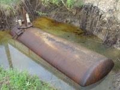

- Résumé de la règlementation (01/07/04) des réservoirs
de stockage
de fioul pour les installations non classées pour l'environnement
ou ne recevant pas du public (ERP 1,2,3 et 4). - Arrêté du 1er juillet 2004 fixant les règles techniques et de sécurité
applicables au stockage des produits pétroliers dans des lieux
non visés par la législation des installations classées
ni la règlementation des établissement recevant du public
de catégorie 1,2,3 et 4. - Arrêté du 18 avril 2004 relatif aux réservoirs des installations classées pour la protection de l'environnement au titre de la rubrique 1432.
- Exemple de certificat de conformité.